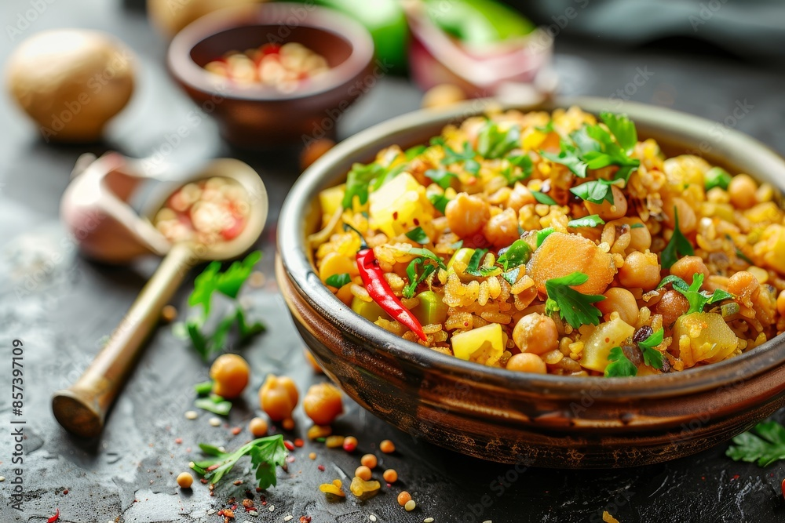

Poha

Description :
Pohay is made of processed flattened rice, roasted with chilies, onions, mustard and cumin seeds and curry leaves (called Kadi-patta). It is a high carbohydrate, low fat, quick meal that can be made in minutes. It garnished with Sev and green coriander .
Ingredients :
- Poha
- Onion , tomatos , chilly and oil to cook
- Water to wash
Steps :
- Wash poha properly
- Put oil in a pan let it warm and now fry the chopped onion and tomatos
- Once its cooked , put poha
- Let it cook for a minutes
- Stop the flame and you are ready to Serve